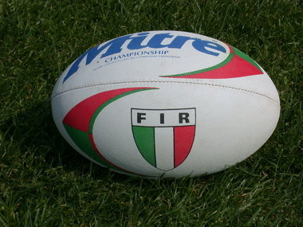

RUGBY a 13

Il Rugby a 13 (ingl. rugby league) è una delle grandi discipline in
cui è suddiviso il gioco del rugby football.Nato alla fine del XIX
secolo nel nord dell'Inghilterra principalmente per motivi socio-
economici, è oggi uno sport di squadra diffuso in maniera capillare
in Inghilterra settentrionale,in Australia (negli stati del Nuovo
Galles del Sud e del Queensland e nel Territorio della Capitale
Australiana), in alcune città del nord della Nuova Zelanda, in Papua
Nuova Guinea e nel sud della Francia.

Il rugby a 15 (ingl. rugby union, fr. rugby à XV ) è uno sport di
squadra e costituisce, insieme al rugby a 13 (rugby league), uno
dei due grandi codici regolamentari in cui è diviso il gioco del
rugby. I due regolamenti, così come gli organismi e le federazioni
nazionali e internazionali che vi fanno riferimento, sono indipendenti
l'uno dall'altro.
cui è suddiviso il gioco del rugby football.Nato alla fine del XIX
secolo nel nord dell'Inghilterra principalmente per motivi socio-
economici, è oggi uno sport di squadra diffuso in maniera capillare
in Inghilterra settentrionale,in Australia (negli stati del Nuovo
Galles del Sud e del Queensland e nel Territorio della Capitale
Australiana), in alcune città del nord della Nuova Zelanda, in Papua
Nuova Guinea e nel sud della Francia.
squadra e costituisce, insieme al rugby a 13 (rugby league), uno
dei due grandi codici regolamentari in cui è diviso il gioco del
rugby. I due regolamenti, così come gli organismi e le federazioni
nazionali e internazionali che vi fanno riferimento, sono indipendenti
l'uno dall'altro.